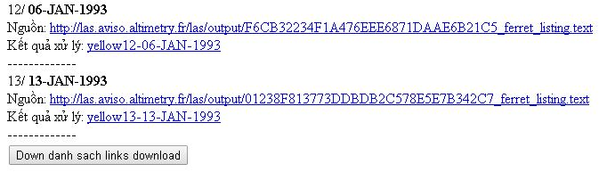
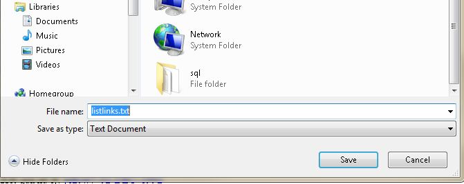
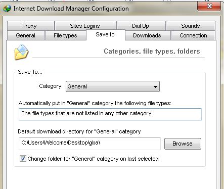
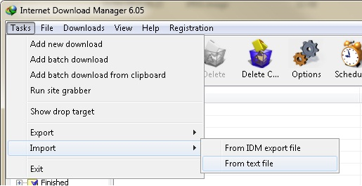
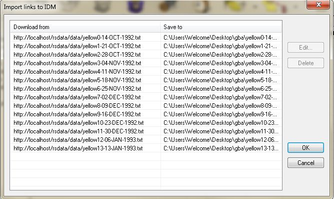
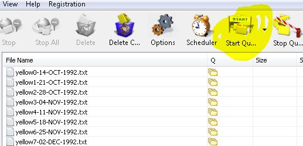

Hướng dẫn download
Bước 1: Download danh sách links
Sau khi đợi trang web chạy xong thì kéo xuống cuối trang như thế này, nhấp vào nút Down danh sách links download

Bước 2: Chọn chỗ lưu file danh sách links

Bước 3: Cài đặt thông số cho IDM

Bước 4: Import danh sách vào IDM


Bước 5: Bắt đầu download

Video
Hướng dẫn getlink
Hướng dẫn Download (có đăng nhập)